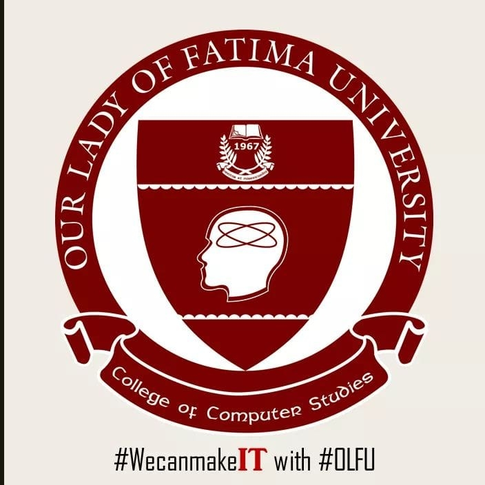

COLLEGE OF COMPUTER STUDIES
MISSION AND VISION
OLFU CCS MISSION
The College of Computer Studies aims to provide innovative and quality instruction to the advancement of technology, intends to develop an entrepreneurial learning environment towards sustainability and growth; and develops responsible and morally upright citizens.
OLFU CCS VISION
We are committed to provide accessible, responsive, and quality Information Technology Education (ITE) programs and to become the Institution of choice in producing competent and responsible IT professionals who are sensitive to the needs and demands of the industry.
OLFU CORE VALUES
A-ASPIRES TO DO HIS BEST
C-CREDIBLE AND COMPASSIONATE
H-HARDWORKING AND HONORABLE
I-INSPIRATION TO OTHERS
E-EFFICIENT,EFFECTIVE AND ETHICAL
V-VISIONARY
E-ENTREPRENEURIAL,EMPLOYABLE AND EXCELLENT WORK HABITS
R-RESPONSIBLE